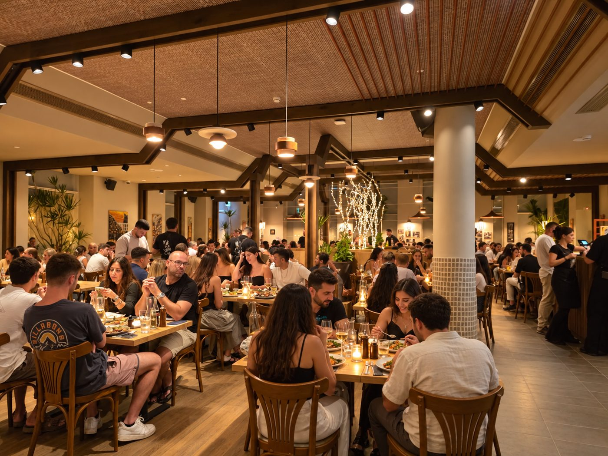

מסעדות בשבת באילת

אילת העיר הדרומית של ישראל יודעת לארח את מבקריה ולהציע להם את החופשה האולטימטיבית ומהי חופשה מופלאה אתם שואלים? בגדול, שינה טובה, רביצה בבריכה/בחוף היום ואוכל טוב שמרעיד את החך. ככל ואתם ממהרים לשפוט את העיר ומחליטים שבשבת זו רביצה במלון בלבד, הקדימו להכיר את אותן מסעדות בשבת באילת. אם אתם אוהבים לאכול בשר שלבו אותו במהלך החופשה הבאה שלכם באילת והכירו בשר משובח אשר מאפשר לכם להגדיר סטנדרטים חדשים.
הבשר בישראל הטעם מברזיל
בין המאכלים הברזילאים המקובלים והפופולאריים הוא הבשר. ברזיל ידוע כמדינה (מתוך חמש מדינות בעולם) אשר מגדלת בשר למאכל - במרבית מהמסעדות שתגיעו אליהם בברזיל, תוכלו ליהנות ממלצר שמגיע עד השולחן הפרטי שלכם וחותך לכם את הבשר אל מול העיניים, מנתח גדול, עסיסי ומובחר. הבשר של הברזילאים הוא בשר עשוי היטב, הם פחות מתחברים לבשר הנא או המידיום, אך אם לקוח מבקש מידת עשייה אחרת הם לא יתנגדו וידעו לעשות זאת בשלמות. בישראל יש ניסיון ואף הצלחה לדמות את המסעדות הברזילאיות המסורתיות בישראל ולאפשר לסועדים מישראל ליהנות לא רק מאיכות הבשר הברזילאי אלא גם מחוויית האירוח הנהוגה בברזיל.
מוסיקה בקצב הברזילאי
אם חשבתם שתגיעו רק לנגוס בבשר עסיסי וטעים - בבישול ארוך או צלייה מיידית תחשבו שוב, כי במסעדה ברזילאית שפתוחה גם ביום שבת תוכלו ליהנות ממוסיקה בקצב הסמבה שתכניס אתכם לאווירה אחרת. מהרגע בו תחצו את דלת הכניסה מהרחוב אל המסעדה, תוכלו לחוש בריחות, לטעום טעמים ולנוע לצלילי המוסיקה. החוויה תאפשר לכם לחוש בברזיל במקביל לידיעה שאתם בישראל.
דעו כי אוכל טוב בשילוב אווירה הכוללת עיצוב מוסיקה וכמובן איכות השרות, הוא שמאפשר את החוויה היוצאת דופן וזו שתשאיר לכם טעם של עוד.
מסעדות בשבת באילת אכול כפי יכולתך
רעבים? באים עם קיבולת גדולה ולא רוצים להוציא סכומים מופרזים? בקרו במסעדה שמאפשרת לכם לאכול כפי יכולתכם ולשלם את המחיר ההוגן ביותר. האיכות הגבוהה של הבשרים והתוספות והאפשרות לאכול כמה שבא לכם מבלי לעצור, מאפשרת לכם לצבור חוויה חדשה שלא חוויתם בעבר. שימו לב שאתם מגיעים רעבים אחרת תצטערו על העובדה שלא היה לכם מקום ללעוס עוד כמה נתחי בשרים.
אז מה אוכלים?
מחפשים את הסיבה להיכנס למסעדה? בואו ושמעו מה אתם יכולים לאכול: בשרים, בשרים ועוד בשרים, סלטים שונים ומגוונים, מנות לילדים ואף לצמחוניים. הלכה למעשה כל מי שמבקש ליהנות ממאכלים מגוונים ואניני טעם, יכול למצוא אותם באחת מאותן מסעדות בשבת באילת. קחו בחשבון שאתם יכולים ליהנות מהשיפוד הרץ… ומי שלא מכיר, זהו שיפוד שאינו נגמר, הם יורידו לצלחת את הבשר מהשיפוד ולא יעצרו עד שתגידו די וגם אם תגידי די הם ישאלו אולי בכל זאת… אז ה בא לכם לאכול?
כמה משלמים עבור התענוג
כדי שתוכלו לאכול וליהנות מכל ביס, מוצעות לכם מנות משובחות במחירים הוגנים לכל הדעות כך שלא תתבקשו להתמודד עם תשלום גבוה מידי שעלול לגרוע מעט מההנאה. התשלום בהחלט שווה את המאכלים שמוגשים לכם במסעדות באילת, כך שאתם יכולים להיות רגועים שלווים ולהגיע רעבים. כדי שתוכלו ליהנות באופן מושלם ומוחלט מהחוויה, מומלץ שתגיעו למקום שכבר הזמנתם מקום מראש כך שבמידה ויש אנשים רבים שרעבים בדיוק כמוכם, לא תאלצו להמתין בתור ולבזבז זמן יקר מהחופשה שלכם. מיד עם סיום הארוחה, תוכלו להגיע אל שפת הבריכה או הים ולהירגע בקצב הסמבה אותה הכתיבה המסעדה. ישנן מסעדות לא מבוטלות אשר מכירות את התקדמות הטכנולוגיה ומאפשר לכם להזמין מקום אונליין, כך שלא תתבקשו להמתין למענה טלפוני מהמסעדה כל שתתבקשו הוא להיכנס אל אתר האינטרנט ולבצע הזמנה.
כך תמצאו מסעדות באילת שפתוחות באילת
אתם רעבים בשבת ובמקרה אתם באילת? שואלים עצמכם איזו מסעדה אילת תעניק לכם את האוכל המשובח ביותר? הקליקו את הביטוי "מסעדות בשבת באילת" ותוכלו למצוא את כל המסעדות בהן אתם יכולים לבקר. כדי להיות בטוחים שאתם הולכים למקום הנכון, חפשו המלצות של סועדים מהעבר וכך תוכלו לדעת במידה ואתם הולכים למקום הנכון שיעניק לחך שלכם חוויה אחרת שתשאיר לכם טעם של עוד ועוד ועוד.